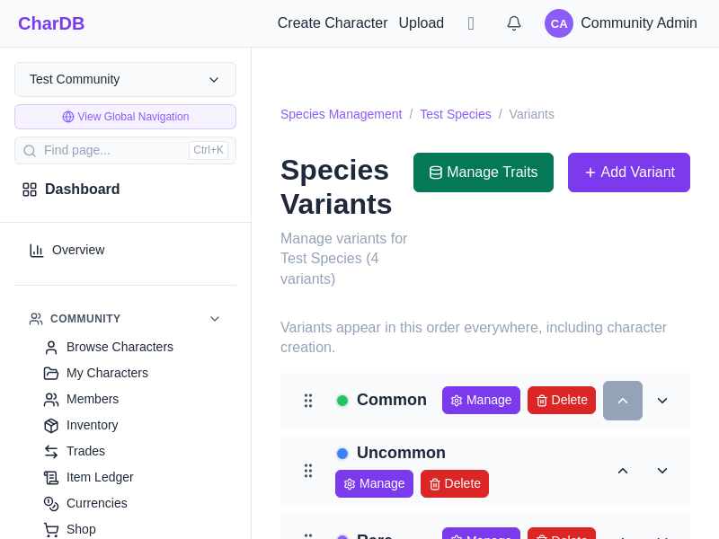
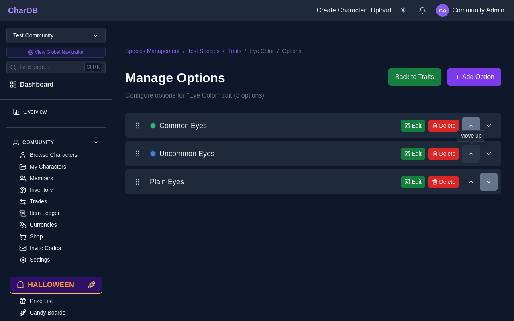
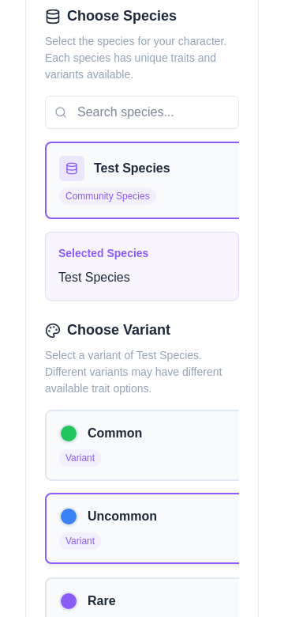
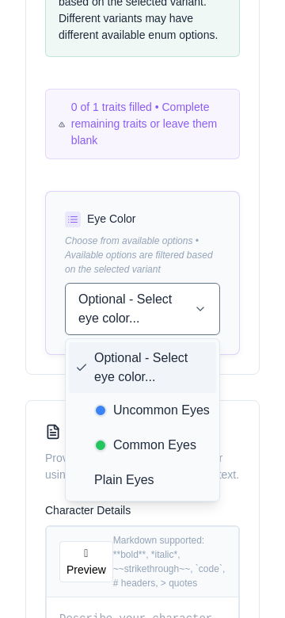

Putting variants and trait options in the order members expect
Open the species and choose Variants. The list is the order members see on the create page, in the variant picker on a character's edit page, and in item editors.
A new variant goes to the end of the list. Variants that existed before ordering start newest first, the order they always showed in.

From the Trait Builder, open a selection trait's options. They move the same way, and the order is the one every dropdown for that trait follows. New options go to the end.

On the create page, variant cards follow the species' order and show each variant's colour. Trait dropdowns list options in their order, with a colour beside each one that has a colour, and the chosen option keeps its colour once picked.
The same coloured dropdowns appear when staff change a character's variant and when a member redeems a variant change item.

